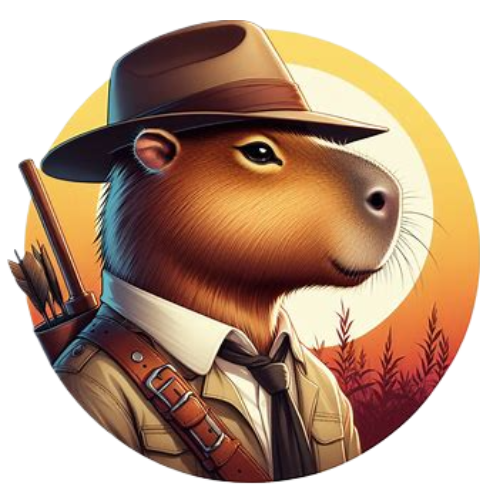
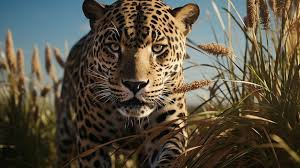
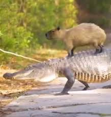
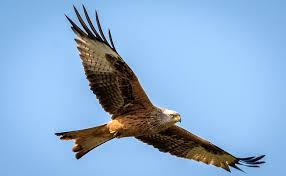

Capypédia
Vin Dieu, nos petits prédateurs t’intéressent tant que ça, suis-moi alors je vais te montrer comment dompter ces petites bêtes.
Ah, les prédateurs, ces ombres furtives qui rôdent dans les recoins de notre monde. En tant que capybaras, nous sommes bien conscients des menaces qui nous entourent, car nous vivons dans un équilibre constant entre la vie et la mort. Les prédateurs sont nombreux, et chacun présente ses propres défis, mais nous avons développé des stratégies pour les contrer et protéger notre clan.
Tout d'abord, il y a les redoutables jaguars, les fantômes de la forêt, qui chassent avec une grâce mortelle. Leur pelage tacheté se fond parfaitement dans les ombres de la jungle, et leur agilité est redoutable. Mais nous, les capybaras, ne sommes pas sans défense. Nous avons appris à détecter leur présence grâce à notre ouïe fine et à notre odorat aiguisé. Lorsque nous sentons leur parfum musqué dans l'air, nous nous retirons dans les zones plus sûres de la jungle, hors de leur portée.
Ensuite, il y a les redoutables caïmans, ces reptiles puissants qui se cachent dans les eaux sombres des rivières et des marécages. Leurs yeux perçants nous observent avec avidité, attendant patiemment le bon moment pour frapper. Mais nous, les capybaras, sommes bien conscients de leur présence. Nous évitons soigneusement les eaux où ils chassent, restant près des rives où nous pouvons nous échapper rapidement si nécessaire. De plus, nous sommes des nageurs habiles, capables de traverser les cours d'eau avec agilité pour échapper à leurs mâchoires mortelles.
Enfin, il y a les redoutables rapaces, ces prédateurs aériens qui planent dans les cieux à la recherche de proies faciles. Leurs yeux perçants peuvent repérer le moindre mouvement dans les herbes hautes, et leur vitesse en vol est impressionnante. Mais nous, les capybaras, avons développé une ruse pour les contrer. Lorsque nous sentons leur présence dans les airs, nous nous regroupons en masse serrée, créant une cible moins attrayante pour leurs attaques. De plus, nous avons des repaires dispersés dans la jungle, où nous pouvons nous réfugier rapidement si nous sentons leur menace approcher.
En fin de compte, vivre parmi les prédateurs est notre réalité quotidienne en tant que capybaras. Mais avec notre intelligence et notre adaptabilité, nous avons trouvé des moyens de coexister pacifiquement avec ces forces de la nature, préservant ainsi notre espèce pour les générations à venir.